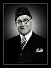

Liaquat Ali Khan
1st Prime Minister of Pakistan

Here's a time line of Liaquat Ali Khan's life:
1895 - Born in Karnal, Punjab, British India (now Karnal, Haryana, India).
1913 - Liaquat Ali Khan attended the Muhammadan Anglo-Oriental College (now Aligarh Muslim University).
1918 - Graduating with a BSc degree in Political science and LLB .
1918 - Married his cousin, Jehangira Begum.
1919 - After the death of his father,Ali Khan, with British Government awarding the grants and scholarship, went to England, attending Oxford University's Exeter College to pursue his higher education.
1921 - Ali Khan was awarded the Master of Law in Law and Justice, by the college faculty.
1923 - Ali Khan returned to his homeland India.
1923 - Ali Khan joined Muslim League.
1926 - Ali Khan initially campaigned in elections from the rural Muslim constituency of Muzzaffarnagar for the provisional legislative council.
1932 - He was unanimously elected Deputy President of UP Legislative Council.
1932 - Ali Khan's second marriage took place in December.His wife, Begum Ra'ana, was a prominent economist and an educator.
1936 - The annual session of the League met in Bombay.
1936 - Jinnah moved a resolution proposing Khan as the Honorary General Secretary.
1940 - Khan was made the deputy leader of the Muslim League Parliamentary party.
1940 - The Pakistan Resolution was adopted in 1940 at the Lahore session of the Muslim League.
1945 - Mass elections were held in India and Khan won the Central Legislature election from the Meerut Constituency in the United Provinces.
1947 - After independence, Khan was appointed as the first Prime Minister of Pakistan by the founding fathers of Pakistan.
1947 - As Prime Minister Ali Khan took initiatives to developed educational infrastructure, science and technology in the country.
1949 - Establishment of a National Bank in November.
1950 - Prime minister Khan visited to the United States.
1950 - Ali Khan established relations with China.
1950 - Ali Khan met Indian Prime Minister Jawaharlal Nehru to sign the Liaquat-Nehru Pact. The pact was an effort to improve relations and reduce tension between India and Pakistan.
1951 - On 16 October, Khan was shot twice in the chest while he was addressing a gathering of 100,000 at Company Bagh (Company Gardens), Rawalpindi.Upon his death, Khan was given the honorific title of "Shaheed-e-Millat", or "Martyr of the Nation". He is buried at Mazar-e-Quaid, the mausoleum built for Jinnah in Karachi.
If you have time, you should read more about this incredible human being on his Wikipedia entry.